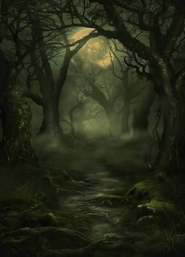

An October After-Dark Adventure
Step into the haunted forest
Follow the winding path beneath ancient trees, where the mist gathers and every shadow has a story. Take a breath, gather your courage, and see what waits beyond the next turn.

The forest after dark
A Walk with the Shadows
Follow the Old Path
Wander beneath towering trees as the trail slips into cool mist and the night grows quiet around you.
Look into the Dark
Keep your eyes open for strange shapes, unexpected sounds, and little surprises along the way.
Take in the Night
Slow your pace, share a few stories, and let the moonlit forest set the scene for your October evening.
Before You Enter the Woods
Make the most of the trail by dressing for the evening, staying with your companions, and following any signs or guidance along the path.
Explore Midnight HarvestBring a little preparation
- Shoes suited to an uneven path
- A warm layer for the night air
- Your walking group and a charged phone
- Respect for the forest and its visitors